Non commercial solar power forecasting reinvented
Traditional methods of solar yield calculation overlook important environmental variables such as seasonality, sun angle, and objects that may shade the solar panels. This leads to inaccurate predictions and suboptimal yield.
GoodSun is an innovative tool that utilizes advanced algorithms to perform precise solar yield calculations. By taking into account environmental variables, GoodSun provides accurate predictions and optimizes the yield of your solar installation.
Test GoodSun today and maximize the yield of your solar installation!